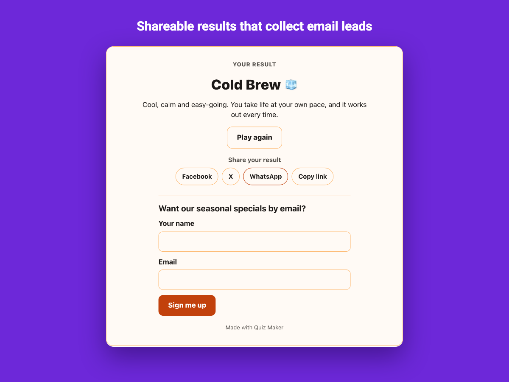

How to make a personality quiz on Wix
"Which coffee are you?" or "What is your travel style?" quizzes are shared widely and are a friendly way to recommend a product or service.
How scoring works
Each answer gives points to one of your results. When the visitor finishes, the result with the most points wins. If two results tie, the one listed first wins, so every visitor always gets an answer.
Write good results
- Keep 3–5 results. More makes each one rarer and the quiz feels random.
- Write results as compliments: a short, positive description people want to share.
- Add a button on each result that links to a matching product, service or page.
Write good questions
- Five to eight questions is enough; long personality quizzes lose people.
- Give every result one answer in each question so all results stay reachable.
- Use everyday situations (a morning, a weekend, a playlist) rather than direct "which do you prefer" questions.

Templates to start from
Quiz Maker includes four personality quizzes to edit: Which Coffee Are You?, What's Your Travel Style?, Which Workout Suits You? and What Kind of Reader Are You?
Questions
Can an answer count toward more than one result?
Each answer counts toward one result in the editor, with a weight from -10 to 10 points, which covers most personality quizzes.
Do I need a paid plan?
No. The Free plan includes two live quizzes with up to ten questions each, unlimited plays and leads, all templates and themes, share buttons and Wix contacts sync. Premium adds more quizzes and questions, a question timer, CSV export, webhooks and custom colors.
Where do the leads go?
Each name and email is saved in the app dashboard with the visitor's result and added to your Wix contacts. On Premium you can export them to CSV or send them to Zapier or Make with a webhook.
Does it work on phones?
Yes. The quiz shows one question at a time, adapts to the width of the page and has large touch-friendly answers.
See it in the Wix App Market